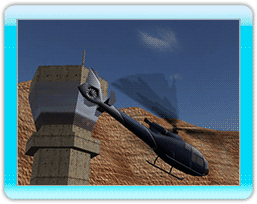
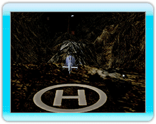
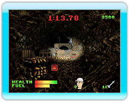

20 |
Credits |
 |
| Copter Crisis - entwickelt von Digital Leisure, Inc.
Direktor David Foster
Produzent Paul Gold
Programmierung David Foster Paul Gold Brian Kayfitz
Spiele-Idee Brian Kayfitz Dustin Epkenhaus
Level-Design Colin Janowicz
Graphik Brian Kayfitz Robert Burden
Portrait-Design Colin Janowicz
Musik Paul Gold
Qualitätssicherung Colin Janowicz Patrick Kwok Robert Burden Dustin Epkenhaus
Besonderer Dank an Murray Foster Jessica Gold Shane Noormohamed Torsten Teich Matteo Marioni |
 |
 |